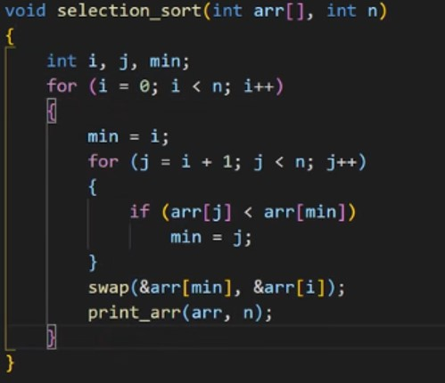
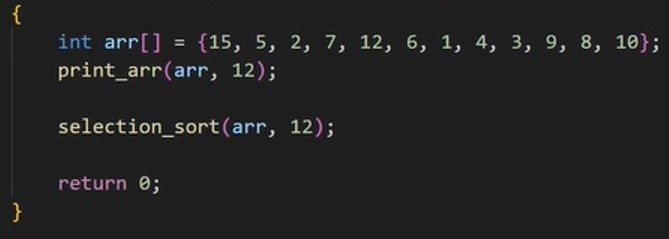
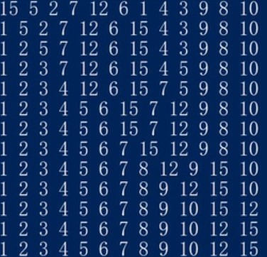

Selection Sort
Similar to insertion sort, the time complexity is also O(n^2). However, it is less stable compared to insertion sort (Ganapathi & Chowdhury, 2021). As it involves a large step of movement (swapping) during the process of sorting. It is not only swap with the data near the unsorted data, but it may also swap between the first and the 15th data. Therefore, it is not that stable. In addition, it may change the relative order of some data, for example, [5, 3, 3, 8, 9], after selection sort, it become [3, 3, 5, 8, 9], but two 3 may swap their position after sorting, so the relative order may be different and thus affect the stability.
The way of selection sort perform is like this. (Ascending order)
For a set of data, it will assume the first data be the smallest data, then compare it with the second data, if the second data is smaller than the first data, the second data will be assumed as the smallest data, then it will be compared with the third data, if the third data is larger than the second data, the second data will continue to compare with the fourth data until the smallest data is really found. They will loop until all the data is sorted.
For example, given a set of data [9, 5, 2, 7, 12, 4]
First step is that it will assume 9 as the smallest data first, then compare it with the second data 5, it is found that 5 < 9, so now 5 is assumed to be the smallest data, 5 will then be compared to 2, as 2 < 5, so now 2 is assumed to be the smallest data, 2 will then be compared to 7, as 2 < 7, 2 will then be compared to 12, as 2 < 12, 2 will then be compared to 4, as 2 < 4, and no more data can used to compared, 2 is the smallest number in the set of data. So 2 and 9 will swap the order and 2 become the first sorted data.
Sorted data:[2] Unsorted data: [5, 9, 7, 12, 4]
Second step is that it will assume 5 as the smallest data first, then compare it with the second data 5, it is found that 5 < 9, 5 will then be compared to 7, as 5 < 7, 5 will then be compared to 12, as 5 < 12, 5 will then be compared to 4, as 5 > 4, so now 4 is assumed to be the smallest number and no more data can used to compared. So 4 and 5 will swap the order and 4 becomes the second sorted data.
Sorted data [2, 4] Unsorted data [9, 7, 12, 5]
Third step: sorted data [2, 4, 5] unsorted data [7, 12, 9]
Fourth step: sorted data [2, 4, 5, 7] unsorted data [12, 9]
Fifth step: sorted data [2, 4, 5, 7, 9] unsorted data [12]
Final step: sorted data [2, 4, 5, 7, 9, 12]

For line 1, the function selection sort is defined, array and its length should be input.
For line 3, the variable i and j are used to control the loop, min is the minimum number.
For line 4, a for loop is created when i = 0 which is the first data to be sorted.
For line 6, we assume the first data is the smallest data so min = i.
For line 7, a for loop is created, we start to compare the assumed smallest data (min) with the data after it (j). j++ means after the loop the data after the compared data will be used to compare the assumed smallest data. when j = n, all data are compared, so we need j < n.
For line 9, if the compared data j is smaller than the assumed smallest data min. We will assume the compared data to become the new smallest data (min = j).
For line 11, we swap the real smallest data and the compared data. (assume the swap function is written already)
For line 12, we print the sorted data.

When the array [15, 5, 2, 7, 12, 6, 1, 4, 3, 9, 8, 10] which length is 12.
The output will become:

To sum up, selection sort has a similar speed with insertion sort (the time complexity is also O(n^2)). However, the problem of comparatively lower stability may occur when using selection sort. The problem can be solved by adding extra conditions when coding the selection sorts.